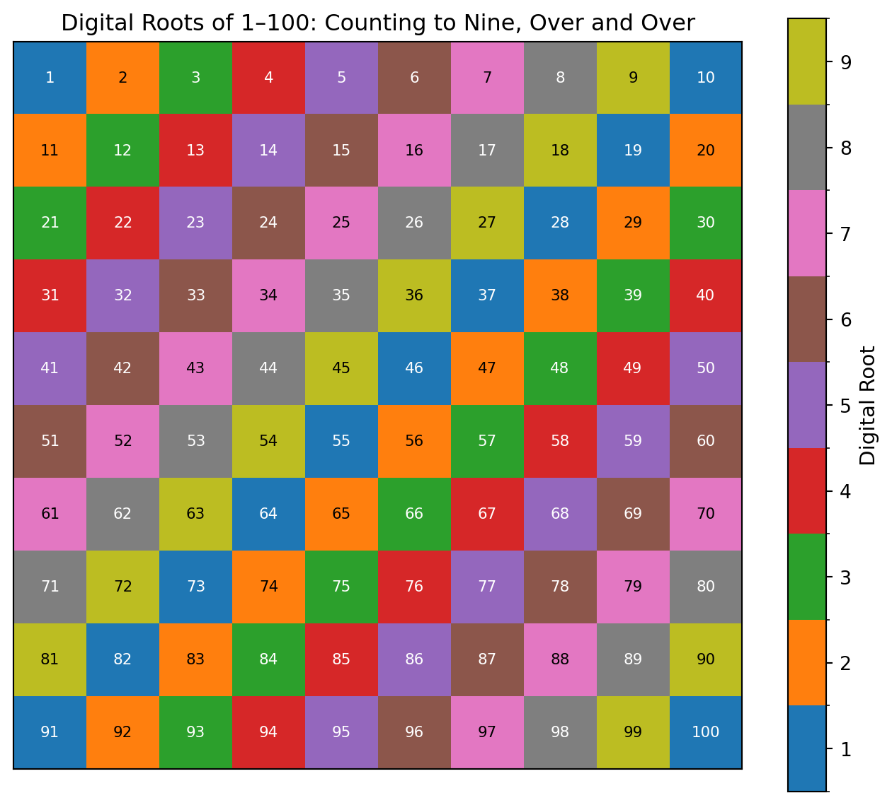
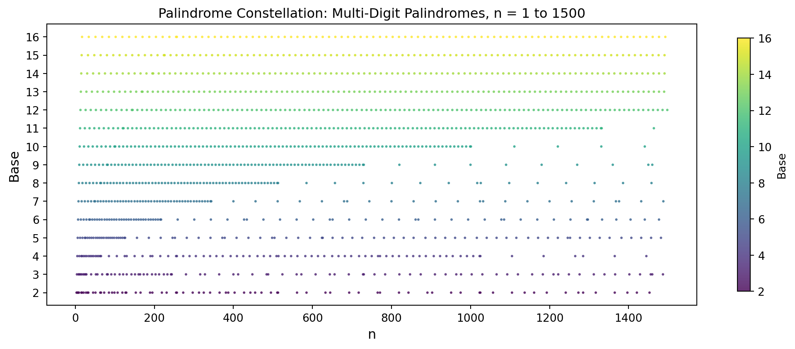
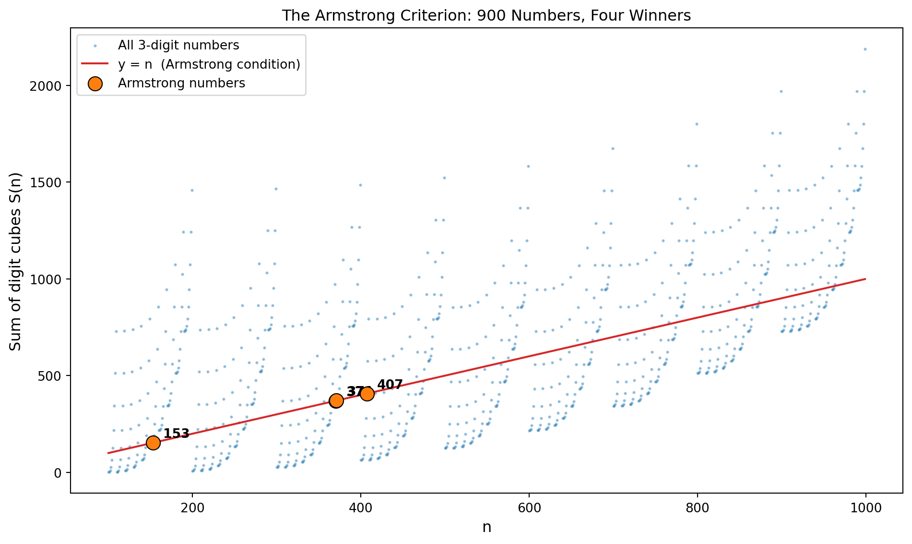
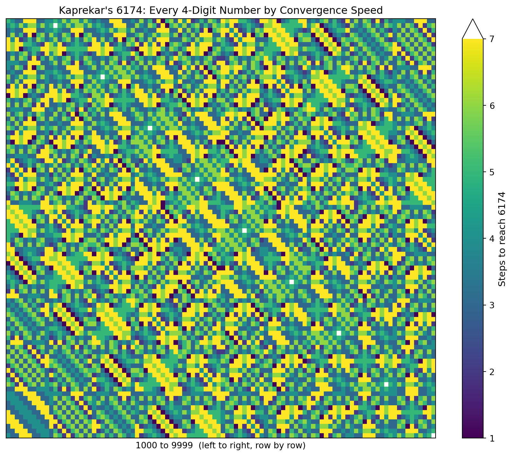
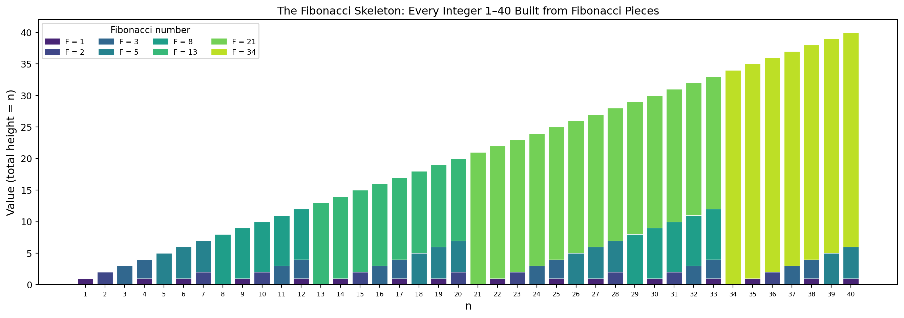

n = 255
print(f"Decimal: {n}")
print(f"Binary: {bin(n)}") # prefix '0b'
print(f"Octal: {oct(n)}") # prefix '0o'
print(f"Hex: {hex(n)}") # prefix '0x'Decimal: 255
Binary: 0b11111111
Octal: 0o377
Hex: 0xffIn the Introduction we glimpsed Carl Sagan’s vision: a circle encoded in the digits of \(\pi\), but only when those digits are written in base 11. Strip away base 10 and the circle appears. That image raises an immediate question: what is a base, and why would changing it reveal something that was hidden before?
The answer is that a base is nothing more than a choice of alphabet for writing numbers. The number fourteen is the same quantity whether we write 14 (base 10), 1110 (base 2), or E (base 16). The quantity is fixed; the representation is a convention. Digit patterns — palindromes, repeated digits, beautiful symmetries — live in the representation. Some patterns are base-dependent accidents; others reflect deeper arithmetic structure that shows up no matter how you write the number. Learning to tell the difference is one of the skills this chapter develops.
In base \(b\), a string of digits \(d_{n-1} d_{n-2} \cdots d_1 d_0\) means
\[d_{n-1} \cdot b^{n-1} + d_{n-2} \cdot b^{n-2} + \cdots + d_1 \cdot b^1 + d_0 \cdot b^0.\]
Each position is worth \(b\) times the position to its right. In base 10 the positions are ones, tens, hundreds, thousands. In base 2 they are ones, twos, fours, eights, sixteens. In base 16 they are ones, sixteens, two-fifty-sixes.
Python has built-in functions for the three most common non-decimal bases.
n = 255
print(f"Decimal: {n}")
print(f"Binary: {bin(n)}") # prefix '0b'
print(f"Octal: {oct(n)}") # prefix '0o'
print(f"Hex: {hex(n)}") # prefix '0x'Decimal: 255
Binary: 0b11111111
Octal: 0o377
Hex: 0xffThe 0b, 0o, and 0x prefixes are Python’s notation — the number itself is still 255 in all four lines. Hexadecimal needs six symbols beyond the usual 0-9, so it borrows the letters a-f: a=10, b=11, c=12, d=13, e=14, f=15. Thus 0xff = \(15 \cdot 16 + 15 = 255\).
To convert to an arbitrary base \(b\) we repeatedly divide by \(b\) and collect remainders from bottom to top.
def to_base(n, b):
"""Convert non-negative integer n to base b (2-36)."""
if n == 0:
return "0"
digits = []
while n:
digits.append(int(n % b))
n //= b
# digits are collected least-significant first
chars = "0123456789abcdefghijklmnopqrstuvwxyz"
return "".join(chars[d] for d in reversed(digits))
for base in [2, 8, 11, 16]:
print(f"255 in base {base:2d}: {to_base(255, base)}")255 in base 2: 11111111
255 in base 8: 377
255 in base 11: 212
255 in base 16: ffBase 11 uses the digit a for ten. The string 212 in base 11 means \(2 \cdot 121 + 1 \cdot 11 + 2 = 255\).
Going the other way — from a base-\(b\) string back to an integer — uses Python’s built-in int(s, base).
# Convert a base-b string back to decimal
print(int("11111111", 2)) # 255 in binary
print(int("ff", 16)) # 255 in hex
print(int("212", 11)) # 255 in base 11255
255
255All three return 255. These two functions — to_base and int(s, b) — are the whole conversion toolkit. Every experiment in this chapter uses them.
Add the digits of 493: \(4 + 9 + 3 = 16\). Add again: \(1 + 6 = 7\). That final single digit, 7, is the digital root of 493. The process always terminates because the digit sum of any positive integer is strictly smaller than the integer itself (for \(n \geq 10\)).
Why does it terminate at a single digit? More interestingly: is there a shortcut?
def digital_root(n):
while n >= 10:
n = sum(int(d) for d in str(n))
return n
samples = [493, 1729, 99999, 100000, 12345]
for n in samples:
print(f"digital_root({n}) = {digital_root(n)}")digital_root(493) = 7
digital_root(1729) = 1
digital_root(99999) = 9
digital_root(100000) = 1
digital_root(12345) = 6The shortcut is a theorem connecting digital roots to modular arithmetic (which we studied in Chapter 2).
Theorem. For any positive integer \(n\), \(\text{dr}(n) = 1 + (n-1) \bmod 9\). Equivalently: \(\text{dr}(n) = n \bmod 9\), unless \(9 \mid n\), in which case \(\text{dr}(n) = 9\).
The reason is that \(10 \equiv 1 \pmod 9\), so \(10^k \equiv 1 \pmod 9\) for every \(k\). Therefore the value of a number and the sum of its base-10 digits differ by a multiple of 9. Repeatedly summing digits strips away multiples of 9 until only the remainder survives.
# Verify: digital_root(n) equals 1 + (n-1) % 9
def dr_formula(n):
return 1 + (n - 1) % 9
all_match = all(
digital_root(n) == dr_formula(n)
for n in range(1, 10000)
)
print(f"Formula matches digit sum for 1..9999: {all_match}")Formula matches digit sum for 1..9999: TrueIn base \(b\) the same argument applies, but now the shortcut is mod \((b-1)\) instead of mod 9. In base 16, \(\text{dr}(n) = n \bmod 15\) (with the exception that multiples of 15 have digital root 15, written f in hex).
def digital_root_base(n, b):
while n >= b:
n = sum(int(d, b) for d in to_base(n, b))
return n
def dr_formula_base(n, b):
return 1 + (n - 1) % (b - 1)
# Verify for base 16, n in 1..999
ok = all(
digital_root_base(n, 16) == dr_formula_base(n, 16)
for n in range(1, 1000)
)
print(f"Base-16 formula matches for 1..999: {ok}")Base-16 formula matches for 1..999: True“Casting out nines” — the old mental arithmetic trick for checking multiplication by verifying digit sums — is exactly this theorem in action. \(47 \times 58 = 2726\). Digital root of 47 is 2; digital root of 58 is 4; product \(2 \times 4 = 8\); digital root of 2726 is \(2+7+2+6 = 17 \to 8\). Check. The trick works in any base: casting out \((b-1)\)s.
If digital roots in base 10 always cycle through 1–9, what does that look like when you lay the first hundred integers side by side — is the cycling perfectly uniform, or does some hidden structure appear?
# uses: digital_root()
import matplotlib.pyplot as plt
import matplotlib.colors as mcolors
import numpy as np
roots = [digital_root(n) for n in range(1, 101)]
grid = np.array(roots).reshape(10, 10)
tab_colors = list(plt.cm.tab10.colors[:9])
cmap_dr = mcolors.ListedColormap(tab_colors)
norm_dr = mcolors.BoundaryNorm([i + 0.5 for i in range(10)], 9)
fig, ax = plt.subplots(figsize=(7, 7))
im = ax.imshow(grid, cmap=cmap_dr, norm=norm_dr, aspect='equal',
interpolation='nearest')
for i in range(10):
for j in range(10):
dr = roots[i * 10 + j]
r, g, b = tab_colors[dr - 1][:3]
txt_color = 'black' if 0.299*r + 0.587*g + 0.114*b > 0.5 else 'white'
ax.text(j, i, str(10 * i + j + 1), ha='center', va='center',
fontsize=8, color=txt_color)
cbar = fig.colorbar(im, ax=ax, ticks=range(1, 10), shrink=0.85)
cbar.set_label('Digital Root', fontsize=11)
ax.set_xticks([])
ax.set_yticks([])
ax.set_title('Digital Roots of 1–100: Counting to Nine, Over and Over',
fontsize=12)
plt.tight_layout()
plt.show()
The diagonal color stripes show that numbers 9 apart always share the same digital root — the quilt tiles perfectly every nine steps. What looks like random color is actually a rigid mod-9 lattice hiding inside the ordinary sequence 1, 2, 3, ….
A palindrome is a string that reads the same forwards and backwards. The number 121 is a palindrome in base 10. The number 33 in base 10 equals 100001 in base 2 — not a palindrome there. But 9 in base 10 equals 1001 in base 2 — a palindrome in both.
# uses: to_base()
def is_palindrome(n, b):
s = to_base(n, b)
return s == s[::-1]
# Numbers that are palindromes in both base 2 and base 10
dual = [
n for n in range(1, 500)
if is_palindrome(n, 10) and is_palindrome(n, 2)
]
print("Palindromes in base 2 and base 10 (1-499):")
print(dual)Palindromes in base 2 and base 10 (1-499):
[1, 3, 5, 7, 9, 33, 99, 313]The sequence starts 1, 3, 5, 7, 9, 33, 99, 313, 585, … Whether this sequence is infinite is an open question — no proof exists either way.
What about palindromes in three bases simultaneously?
triple = [
n for n in range(1, 10000)
if is_palindrome(n, 2)
and is_palindrome(n, 10)
and is_palindrome(n, 16)
]
print("Palindrome in bases 2, 10, and 16 (1-9999):")
print(triple)Palindrome in bases 2, 10, and 16 (1-9999):
[1, 3, 5, 7, 9]The first interesting multi-base palindrome is 1 (trivially a single digit in every base). The next is a (=10), which is palindromic in base 10 as the single digit a — wait, that is only one digit, so trivially palindromic. Multi-digit palindromes in several bases simultaneously are rare.
Every single-digit number is trivially palindromic in any base larger than it. The interesting cases start when the number has at least two digits in every base we care about.
# Require at least 2 digits in all three bases
non_trivial = [
n for n in range(4, 100000)
if len(to_base(n, 2)) >= 2
and len(to_base(n, 10)) >= 2
and len(to_base(n, 16)) >= 2
and is_palindrome(n, 2)
and is_palindrome(n, 10)
and is_palindrome(n, 16)
]
print("Non-trivial base-2/10/16 palindromes under 100k:")
print(non_trivial)Non-trivial base-2/10/16 palindromes under 100k:
[]Which numbers below 1500 are multi-digit palindromes in many bases simultaneously — and do they cluster in patterns, or scatter at random?
# uses: to_base(), is_palindrome()
import matplotlib.pyplot as plt
xs_pal, ys_pal = [], []
for n_pal in range(1, 1501):
for b_pal in range(2, 17):
s_pal = to_base(n_pal, b_pal)
if len(s_pal) >= 2 and s_pal == s_pal[::-1]:
xs_pal.append(n_pal)
ys_pal.append(b_pal)
fig, ax = plt.subplots(figsize=(11, 4.5))
sc = ax.scatter(xs_pal, ys_pal, c=ys_pal, cmap='viridis', s=5, alpha=0.8, linewidths=0)
cb = fig.colorbar(sc, ax=ax, shrink=0.9)
cb.set_label('Base', fontsize=10)
ax.set_yticks(list(range(2, 17)))
ax.set_xlabel('n', fontsize=12)
ax.set_ylabel('Base', fontsize=12)
ax.set_title(
'Palindrome Constellation: Multi-Digit Palindromes, n = 1 to 1500',
fontsize=12
)
plt.tight_layout()
plt.show()
Base-16 fills the map densely because every two-digit hex number of the form dd (like 0x11 = 17, 0x22 = 34, …) is automatically a palindrome, giving the evenly-spaced stripes. Base-2 is nearly empty — binary palindromes like 1001 and 10101 are rare special cases. You just mapped hidden palindrome structure across fifteen bases at once: that is how computational exploration begins.
An Armstrong number (also called a narcissistic number) in base 10 is a number equal to the sum of its own digits each raised to the power equal to the number of digits. The three-digit Armstrong numbers satisfy
\[\overline{abc} = a^3 + b^3 + c^3.\]
For example, \(153 = 1^3 + 5^3 + 3^3 = 1 + 125 + 27 = 153\).
# uses: to_base()
def is_armstrong(n, b=10):
s = to_base(n, b)
k = len(s)
return n == sum(int(d, b)**k for d in s)
# All Armstrong numbers in base 10 up to 10^7
armstrong_10 = [
n for n in range(1, 10**7)
if is_armstrong(n)
]
print("Armstrong numbers (base 10) up to 10^7:")
print(armstrong_10)Armstrong numbers (base 10) up to 10^7:
[1, 2, 3, 4, 5, 6, 7, 8, 9, 153, 370, 371, 407, 1634, 8208, 9474, 54748, 92727, 93084, 548834, 1741725, 4210818, 9800817, 9926315]There are exactly 88 Armstrong numbers in base 10 across all digit lengths (a finite count, provable because eventually \(n\) grows faster than the digit-power sum).
The concept extends naturally. An Armstrong number in base \(b\) satisfies the same condition using base-\(b\) digits.
# Armstrong numbers in base 16, up to 16^4 = 65536
arm_16 = [
n for n in range(1, 16**4)
if is_armstrong(n, 16)
]
print("Armstrong numbers (base 16) up to 16^4:")
print(arm_16)
# Show their hex representations too
print("In hex:", [hex(n) for n in arm_16])Armstrong numbers (base 16) up to 16^4:
[1, 2, 3, 4, 5, 6, 7, 8, 9, 10, 11, 12, 13, 14, 15, 342, 371, 520, 584, 645, 1189, 1456, 1457, 1547, 1611, 2240, 2241, 2458, 2729, 2755, 3240, 3689, 3744, 3745, 47314]
In hex: ['0x1', '0x2', '0x3', '0x4', '0x5', '0x6', '0x7', '0x8', '0x9', '0xa', '0xb', '0xc', '0xd', '0xe', '0xf', '0x156', '0x173', '0x208', '0x248', '0x285', '0x4a5', '0x5b0', '0x5b1', '0x60b', '0x64b', '0x8c0', '0x8c1', '0x99a', '0xaa9', '0xac3', '0xca8', '0xe69', '0xea0', '0xea1', '0xb8d2']Why are there finitely many Armstrong numbers in every base? If \(n\) has \(k\) digits in base \(b\), then \(n \geq b^{k-1}\) while the Armstrong sum is at most \(k \cdot (b-1)^k\). For fixed \(b\), once \(k\) is large enough, \(b^{k-1} > k(b-1)^k\), and no Armstrong number can exist with that many digits.
Among all 900 three-digit numbers, exactly how many are Armstrong numbers — and can a single scatter plot reveal why they are so rare?
import matplotlib.pyplot as plt
BLUE = '#1f77b4'
RED = '#d62728'
ORANGE = '#ff7f0e'
ns = list(range(100, 1000))
ss = [sum(int(d)**3 for d in str(n)) for n in ns]
fig, ax = plt.subplots(figsize=(10, 6))
ax.scatter(ns, ss, c=BLUE, s=2, alpha=0.35, label='All 3-digit numbers')
ax.plot([100, 999], [100, 999], color=RED, lw=1.5,
label='y = n (Armstrong condition)', zorder=3)
arm_pairs = [(n, s) for n, s in zip(ns, ss) if n == s]
ax.scatter([p[0] for p in arm_pairs], [p[1] for p in arm_pairs],
c=ORANGE, s=120, zorder=5, edgecolors='black', lw=0.8,
label='Armstrong numbers')
for n, s in arm_pairs:
ax.annotate(str(n), (n, s), xytext=(8, 4),
textcoords='offset points', fontsize=10, fontweight='bold')
ax.set_xlabel('n', fontsize=12)
ax.set_ylabel('Sum of digit cubes S(n)', fontsize=12)
ax.set_title('The Armstrong Criterion: 900 Numbers, Four Winners', fontsize=12)
ax.legend(fontsize=10)
plt.tight_layout()
plt.show()
The entire cloud tilts away from the diagonal — most three-digit numbers are far too large or too small for their digit cubes to match them. The four orange dots are the only accidental collisions where the number and its digit-cube sum happen to be equal, making Armstrong numbers genuinely rare treasures.
D.R.Kaprekar was an Indian recreational mathematician who discovered a remarkable fixed-point in 1949 (Kaprekar 1949). Take any four-digit base-10 number that is not a repdigit (all digits the same). Sort its digits from largest to smallest to get a number \(A\), and from smallest to largest to get \(B\). Compute \(A - B\). Repeat. No matter where you start, the process always reaches 6174 in at most seven steps.
# uses: to_base()
def kaprekar_step(n, b=10, ndigits=4):
s = to_base(n, b).zfill(ndigits)
desc = int("".join(sorted(s, reverse=True)), b)
asc = int("".join(sorted(s)), b)
return desc - asc
def kaprekar_sequence(n, b=10, ndigits=4):
seq = [n]
while True:
n = kaprekar_step(n, b, ndigits)
seq.append(n)
if n == seq[-2]: # reached fixed point
break
if len(seq) > 20: # safety stop
break
return seq
# Test a few starting values
for start in [1234, 5678, 9000, 3087]:
seq = kaprekar_sequence(start)
print(f"{start}: {seq}")1234: [1234, 3087, 8352, 6174, 6174]
5678: [5678, 3087, 8352, 6174, 6174]
9000: [9000, 8991, 8082, 8532, 6174, 6174]
3087: [3087, 8352, 6174, 6174]6174 is a fixed point: \(7641 - 1467 = 6174\). Every four-digit number (with at least two distinct digits) is eventually absorbed into this fixed point.
Does every base have a Kaprekar constant? Not every base and digit length combination works — some lead to cycles rather than a single fixed point.
# uses: to_base(), kaprekar_step()
def find_kaprekar_fixed_points(b, ndigits):
"""Find fixed points of the Kaprekar map in base b."""
results = set()
lo = b**(ndigits - 1) # smallest ndigits number
hi = b**ndigits # one past largest
for n in range(lo, hi):
s = to_base(n, b).zfill(ndigits)
if len(set(s)) < 2: # skip repdigits
continue
for _ in range(20):
n2 = kaprekar_step(n, b, ndigits)
if n2 == n:
results.add(n)
break
n = n2
return sorted(results)
print("Base 10, 4 digits:", find_kaprekar_fixed_points(10, 4))
print("Base 10, 3 digits:", find_kaprekar_fixed_points(10, 3))
print("Base 8, 4 digits:", find_kaprekar_fixed_points(8, 4))
print("Base 6, 4 digits:", find_kaprekar_fixed_points(6, 4))Base 10, 4 digits: [6174]
Base 10, 3 digits: [495]
Base 8, 4 digits: []
Base 6, 4 digits: []Base 10 with three digits has fixed point 495: \(954 - 459 = 495\). Some bases yield empty sets for a given digit length — meaning the process always enters a cycle rather than a fixed point.
Does every four-digit number converge to 6174 at the same speed, or do some take much longer — and is there a hidden pattern in which numbers take which route?
# uses: kaprekar_step()
import matplotlib.pyplot as plt
import numpy as np
def kap_steps(n, limit=20):
seen = set()
k = n
for i in range(limit):
if k == 6174:
return i
if k in seen or k == 0:
return limit
seen.add(k)
k = kaprekar_step(k)
return limit
kap_data = np.array([kap_steps(n) for n in range(1000, 10000)])
kap_grid = kap_data.reshape(90, 100)
fig, ax = plt.subplots(figsize=(9, 7.5))
kap_cmap = plt.cm.viridis.copy()
kap_cmap.set_over('white')
im = ax.imshow(kap_grid, aspect='auto', cmap=kap_cmap, vmin=1, vmax=7,
interpolation='nearest', origin='upper')
cb = fig.colorbar(im, ax=ax, ticks=range(1, 8), extend='max')
cb.set_label('Steps to reach 6174', fontsize=11)
cb.ax.set_yticklabels([str(i) for i in range(1, 8)])
ax.set_xticks([])
ax.set_yticks([])
ax.set_xlabel('1000 to 9999 (left to right, row by row)', fontsize=10)
ax.set_title(
"Kaprekar's 6174: Every 4-Digit Number by Convergence Speed",
fontsize=12
)
plt.tight_layout()
plt.show()
The diagonal bands expose a hidden rule: numbers that share the same four digits (like 1234 and 4321) always land on 6174 in exactly the same number of steps, because sorting them produces identical results. With about fifty lines of Python you just mapped the convergence speed of all 9000 four-digit numbers — that is experimental mathematics.

A repunit (short for repeated unit) is a number whose digits are all 1s: \(R_n = \underbrace{11 \cdots 1}_{n}\). In base 10, \(R_1 = 1\), \(R_2 = 11\), \(R_3 = 111 = 3 \times 37\), \(R_7 = 1111111\). A repunit in base \(b\) equals \((b^n - 1)/(b - 1)\).
For \(R_n\) to be prime, a necessary condition is that \(n\) itself is prime (because \(R_{ab} = R_a \cdot Q\) for some integer \(Q\)). But prime \(n\) does not guarantee prime \(R_n\) — \(R_3 = 111 = 3 \times 37\) has \(n = 3\) prime but \(R_3\) composite.
from sympy import isprime, factorint
import textwrap
def repunit(n, b=10):
return (b**n - 1) // (b - 1)
# Which repunits R_n in base 10 are prime for n <= 50?
print("Base-10 repunit primes R_n for n <= 50:")
prime_ns = [
n for n in range(2, 51)
if isprime(repunit(n, 10))
]
print(prime_ns)Base-10 repunit primes R_n for n <= 50:
[2, 19, 23]In base 10, repunit primes are known for \(n = 2, 19, 23, 317, 1031, \ldots\) and are extremely rare. The connection to Chapter 1 (Chapter 1): repunit primes are a special case of the question “what structure must \(n\) have for \(b^n - 1\) to yield a prime after dividing by \(b - 1\)?” — the same question that governs Mersenne primes in base 2.
# uses: repunit()
from sympy import isprime
# Mersenne primes are repunit primes in base 2!
# R_n in base 2 = 2^n - 1
print("Base-2 repunit (Mersenne) primes for n <= 40:")
mersenne_ns = [
n for n in range(2, 41)
if isprime(repunit(n, 2))
]
print(mersenne_ns)Base-2 repunit (Mersenne) primes for n <= 40:
[2, 3, 5, 7, 13, 17, 19, 31]Mersenne primes are exactly the base-2 repunit primes. The study of repunit primes in other bases is an active area of computational number theory where new results are still being found with computers.
Divide 1 by 7 in long division. The decimal expansion is \(0.\overline{142857}\) — a block of six digits that repeats.
from fractions import Fraction
import pprint
def repeating_decimal(p, q, b=10):
"""
Return the repeating block of p/q in base b.
Returns (non_repeat_digits, repeat_digits) as lists.
"""
n = p
remainders = {}
digits = []
pos = 0
while n != 0:
if n in remainders:
start = remainders[n]
return digits[:start], digits[start:]
remainders[n] = pos
n *= b
digits.append(n // q)
n %= q
pos += 1
return digits, [] # terminating decimal
_, cycle = repeating_decimal(1, 7)
print("Repeating block of 1/7:", cycle)Repeating block of 1/7: [1, 4, 2, 8, 5, 7]The block 142857 has a magical property: multiply it by 1, 2, 3, 4, 5, or 6 and you get a cyclic permutation of the same digits.
# uses: repeating_decimal()
block = 142857
for k in range(1, 7):
product = k * block
print(f"{k} x {block} = {product}")1 x 142857 = 142857
2 x 142857 = 285714
3 x 142857 = 428571
4 x 142857 = 571428
5 x 142857 = 714285
6 x 142857 = 857142\(142857 \times 7 = 999999\) — six nines. This is not a coincidence: 7 is a full-reptend prime in base 10. A prime \(p\) is full-reptend in base \(b\) if the decimal expansion of \(1/p\) in base \(b\) has a repeating block of length exactly \(p - 1\). The length is the multiplicative order of \(b\) modulo \(p\) (see Section 2.5), so \(p\) is full-reptend when that order is as large as possible: \(p - 1\).

from sympy import n_order, isprime
import math
def is_full_reptend(p, b=10):
if not isprime(p) or math.gcd(b, p) != 1:
return False
return n_order(b, p) == p - 1
# Full-reptend primes in base 10, up to 100
full_reptend = [
p for p in range(2, 101)
if is_full_reptend(p)
]
print("Full-reptend primes in base 10 up to 100:")
print(full_reptend)Full-reptend primes in base 10 up to 100:
[7, 17, 19, 23, 29, 47, 59, 61, 97]Artin’s conjecture (Artin 1927) — the same conjecture mentioned in Chapter 2 for primitive roots — predicts that there are infinitely many full-reptend primes for any base \(b\) that is not a perfect square. The conjecture is still unproved.
Not every representation requires a fixed base. The Fibonacci base (also called Zeckendorf representation) writes every positive integer as a sum of distinct, non-consecutive Fibonacci numbers.
Zeckendorf’s theorem (Zeckendorf 1972): Every positive integer has a unique such representation. The greedy algorithm works: repeatedly subtract the largest Fibonacci number that fits.
from sympy import fibonacci
def fibonacci_list(up_to):
fibs = []
k = 1
while True:
f = fibonacci(k)
if f > up_to:
break
fibs.append(f)
k += 1
return sorted(fibs, reverse=True)
def zeckendorf(n):
fibs = fibonacci_list(n)
terms = []
for f in fibs:
if f <= n:
terms.append(f)
n -= f
if n == 0:
break
return sorted(terms)
for n in [1, 10, 50, 100, 200]:
z = zeckendorf(n)
print(f"{n:3d} = {z}") 1 = [1]
10 = [2, 8]
50 = [3, 13, 34]
100 = [3, 8, 89]
200 = [1, 55, 144]The Fibonacci base writes each number as a binary-like string of 0s and 1s indexed by Fibonacci numbers, with the constraint that no two adjacent bits are 1. This is the “Fibonacci coding” used in data compression.
# uses: fibonacci_list()
def to_fib_base(n):
"""Return binary string in Fibonacci base (no '11')."""
fibs = fibonacci_list(n)
bits = []
for f in fibs:
if f <= n:
bits.append('1')
n -= f
else:
bits.append('0')
return "".join(bits)
for n in range(1, 16):
s = to_fib_base(n)
# verify no two consecutive 1s (Zeckendorf property)
valid = "11" not in s
print(f"{n:2d}: {s:10s} valid={valid}") 1: 10 valid=True
2: 100 valid=True
3: 1000 valid=True
4: 1010 valid=True
5: 10000 valid=True
6: 10010 valid=True
7: 10100 valid=True
8: 100000 valid=True
9: 100010 valid=True
10: 100100 valid=True
11: 101000 valid=True
12: 101010 valid=True
13: 1000000 valid=True
14: 1000010 valid=True
15: 1000100 valid=TrueZeckendorf’s theorem guarantees that every positive integer breaks into a unique sum of non-consecutive Fibonacci numbers. What does that decomposition look like across the first 40 integers — and can you see a pattern in which Fibonacci numbers appear most often?
# uses: zeckendorf()
import matplotlib.pyplot as plt
import matplotlib.patches as mpatches
import numpy as np
N = 40
all_fibs = sorted(set(f for n in range(1, N + 1) for f in zeckendorf(n)))
palette = plt.cm.viridis(np.linspace(0.1, 0.9, len(all_fibs)))
fib_color = {f: palette[i] for i, f in enumerate(all_fibs)}
fig, ax = plt.subplots(figsize=(14, 5))
for n in range(1, N + 1):
terms = sorted(zeckendorf(n))
bottom = 0
for f in terms:
ax.bar(n, f, bottom=bottom, color=fib_color[f],
edgecolor='white', linewidth=0.4)
bottom += f
legend_handles = [mpatches.Patch(color=fib_color[f], label=f'F = {f}')
for f in all_fibs]
ax.legend(handles=legend_handles, fontsize=8, ncol=4,
loc='upper left', title='Fibonacci number')
ax.set_xlabel('n', fontsize=12)
ax.set_ylabel('Value (total height = n)', fontsize=12)
ax.set_title(
'The Fibonacci Skeleton: Every Integer 1–40 Built from Fibonacci Pieces',
fontsize=12
)
ax.set_xticks(range(1, N + 1))
ax.tick_params(axis='x', labelsize=7)
plt.tight_layout()
plt.show()
The bars grow taller exactly as they should — each one is precisely n units high — but the color segments reveal the hidden Fibonacci anatomy inside each integer. Notice how the Fibonacci numbers themselves (1, 2, 3, 5, 8, 13, …) appear as single-color bars, while numbers just below them need the most pieces to fill the gap.
The following topics are arranged from the most accessible to the most open-ended. The first several can be completed in an afternoon; the last few could anchor a semester of independent study.
1. Base conversion by hand. Choose three numbers between 100 and 1000. Convert each to base 2, base 8, and base 16 by performing the repeated-division algorithm by hand, then verify with Python. Reverse-convert the base-2 result back to base 10 by summing powers of 2. Explain why every step in to_base produces digits from right to left (least significant first) even though we print them left to right.
(Problem proposed by Claude Code.)
2. Digit sum divisibility rules. In base 10, a number is divisible by 3 (or 9) iff its digit sum is. In base 10 it is divisible by 11 iff the alternating digit sum is. Write Python to verify both rules for all integers 1–9999. Now generalize: in base \(b\), when does the digit sum test work for \(b - 1\)? For \(b + 1\)? Prove the rules using the congruence \(10^k \equiv 1 \pmod 9\) and its analogues, then find the corresponding rules for bases 7, 12, and 16.
(Problem proposed by Claude Code.)
3. Last-digit patterns in other bases. In the Preface we observed that perfect squares in base 10 can only end in the digits 0, 1, 4, 5, 6, 9. Compute the set of possible last digits for perfect squares in bases 7, 8, and 16. Plot the allowed last digits as a fraction of all \(b\) possible last digits. Do smaller bases allow a larger proportion of last digits? State a conjecture and test it for all bases from 2 to 20.
(Problem proposed by Claude Code.)
4. Numbers palindromic in two bases. Extend the search in Section 4.3: find all integers below \(10^6\) that are palindromes in both base 10 and base \(b\), for each \(b\) from 2 to 15. For which values of \(b\) does the count grow fastest? Are there infinite families? Explore whether any number above \(10^6\) is a non-trivial palindrome in three or more bases simultaneously.
(Problem proposed by Claude Code.)
5. Armstrong numbers in every base. Compute the complete set of Armstrong numbers in base \(b\) for \(b = 2, 3, \ldots, 16\). Does the count follow a pattern? For base 2 the only Armstrong number is 1 (since \(1^1 = 1\) and all larger base-2 numbers fall short). Why? Prove the finiteness bound mentioned in the chapter and compute the exact maximum digit length for which Armstrong numbers can exist in base 10.
(Problem proposed by Claude Code.)
6. The Kaprekar map for three-digit numbers. The chapter showed that the 4-digit Kaprekar map in base 10 converges to 6174. Verify that the 3-digit map always converges to 495. Then search all bases \(b\) from 2 to 16 and digit lengths \(d = 3\) and \(d = 4\) for Kaprekar fixed points and Kaprekar cycles. Build a table: for each \((b, d)\) pair, list the fixed points and any cycles found.
(Problem proposed by Claude Code.)
7. Self-describing numbers. A self-describing number is a base-10 number where the \(k\)th digit (from the left, starting at 0) equals the count of how many times \(k\) appears among all digits. The four-digit example is 1210: digit 0 is 1 (one zero), digit 1 is 2 (two ones), digit 2 is 1 (one two), digit 3 is 0 (zero threes). Find all self-describing numbers in base 10 by exhaustive search. Are there self-describing numbers in other bases?
(Problem proposed by Claude Code.)
8. Repunit primes in base 2 and beyond. The chapter showed that Mersenne primes are exactly the base-2 repunit primes. Extend the search: for each base \(b\) from 2 to 10, list all \(n \leq 100\) for which the repunit \(R_n(b) = (b^n - 1)/(b-1)\) is prime. Which bases have the densest repunit primes below \(R_{100}\)? Formulate a conjecture about the density of repunit primes compared to Mersenne primes. Connect to Chapter 1: what conditions on \(n\) are necessary (not just prime \(n\)) for a repunit prime?
(Problem proposed by Claude Code.)
9. Cyclic numbers and full-reptend primes. A cyclic number in base \(b\) arises from every full-reptend prime. For each full-reptend prime \(p \leq 50\) in base 10, compute the cyclic number \((p-1)\) digits long and verify the cyclic permutation property. Now switch to base 7: which primes are full-reptend in base 7? What is the cyclic number coming from the smallest full-reptend prime in base 7? Verify that multiplying it by \(1, 2, \ldots, p-1\) produces cyclic permutations.
(Problem proposed by Claude Code.)
10. Zeckendorf density and “missing” representations. Every positive integer has a unique Zeckendorf representation; the greedy algorithm always works. But what happens with greedy Fibonacci coding in reverse? Starting from a Fibonacci-base string with no two adjacent 1s, decrease each 1 to 0 and replace — does the process ever cycle? Compute, for each \(n \leq 1000\), the length of its Zeckendorf representation. Plot these lengths. Show that the average length of the Zeckendorf representation of \(n\) grows as \(\log_\phi n\) where \(\phi = (1+\sqrt{5})/2\) is the golden ratio (see Chapter 6).
(Problem proposed by Claude Code.)
11. Digital roots in every base. The chapter proved \(\text{dr}_{10}(n) = 1 + (n-1) \bmod 9\). Prove the analogous result for arbitrary base \(b\): \(\text{dr}_b(n) = 1 + (n-1) \bmod (b-1)\). Compute the digital root of \(n!\) in base 10 for \(n = 1, 2, \ldots, 30\). What do you notice? Now compute the digital root of \(n!\) in base 12. Explain the pattern you see by connecting \(n!\) to divisibility.
(Problem proposed by Claude Code.)
12. Happy numbers. Start with a positive integer. Replace it with the sum of the squares of its base-10 digits. A happy number is one that eventually reaches 1 under repeated iteration. All other numbers fall into the cycle \(4 \to 16 \to 37 \to 58 \to 89 \to 145 \to 42 \to 20 \to 4\). Find all happy numbers below 1000. Then define happy numbers for base \(b\): use the sum of squares of base-\(b\) digits. Does every base have the same eventual cycle for non-happy numbers? Is the cycle unique?
(Problem proposed by Claude Code.)
13. Benford’s law and leading digits. In many naturally occurring data sets, the first digit is 1 about 30% of the time, 2 about 17.6% of the time, and so on, following \(\log_{10}(1 + 1/d)\). This is Benford’s law (Benford 1938). Check it on a large data set of your choice (population figures, stock prices, Fibonacci numbers). Then derive Benford’s law for base \(b\): the probability of leading digit \(d\) should be \(\log_b(1 + 1/d)\). Verify with simulation.
(Problem proposed by Claude Code.)
14. The base-\((-2)\) system. It is possible to build a number system with a negative base. In base \(-2\) (negabinary), the place values are \(\ldots, 4, -2, 1\). Every integer (positive and negative) can be represented without a minus sign, using only the digits 0 and 1. Implement conversion to and from negabinary. What is \(-5\) in negabinary? Show that addition in negabinary requires special carry rules. Generalize to base \(-b\) for \(b = 3\) and \(b = 10\).
(Problem proposed by Claude Code.)
15. The balanced ternary system. Base 3 normally uses digits 0, 1, 2. Balanced ternary replaces them with \(\{-1, 0, 1\}\) (often written \(\{\text{T}, 0, 1\}\)). Every integer has a unique balanced-ternary representation. Implement conversion. Show that balanced ternary minimizes the number of signed digits needed to represent \(n\) compared to any other base. The Russian Peasant Multiplication algorithm is elegant in balanced ternary: implement it and compare its step count to binary multiplication.
(Problem proposed by Claude Code.)
16. Rational bases and the \(\phi\)-base system. Can we build a positional system with a non-integer base? The golden ratio \(\phi = (1 + \sqrt 5)/2\) satisfies \(\phi^2 = \phi + 1\). Define “base \(\phi\)” using only digits 0 and 1, where adjacent 1s can be replaced by a single 1 two positions left (because \(\phi^2 = \phi + 1\)). Every non-negative integer has a unique “standard” base-\(\phi\) encoding with no two adjacent 1s — exactly the Zeckendorf representation! Prove this equivalence. How does addition work in base \(\phi\)?
(Problem proposed by Claude Code.)
17. Searching for base-11 patterns in \(\pi\). The introduction described Sagan’s fictional message in \(\pi\) at base 11. Using mpmath (see Chapter 10), compute 10,000 digits of \(\pi\) in base 11. Test whether the distribution of digits is uniform (each of the 11 digits appearing with frequency near \(1/11\)). For each digit length \(k = 1, 2, 3\), check whether all \(11^k\) blocks of \(k\) consecutive base-11 digits appear with equal frequency (this is the definition of normality in base 11). Report the chi-squared statistic for each test.
(Problem proposed by Claude Code.)
18. The Stern-Brocot tree and base representations. The Stern-Brocot tree is an infinite binary tree containing every positive rational number exactly once. Navigating left from the root corresponds to taking a fraction less than 1 and navigating right corresponds to taking a fraction greater than 1. The path from the root to any fraction encodes it in a kind of binary representation. Implement the Stern-Brocot tree and find the paths to \(1/7\), \(3/5\), \(\phi^{-1}\), and \(\sqrt{2} - 1\). How does the path length relate to the continued fraction expansion (see Chapter 8)?
(Problem proposed by Claude Code.)
19. Periods of \(1/p\) across all bases simultaneously. For a prime \(p\), define \(\ell_b(p)\) as the period length of \(1/p\) in base \(b\) (the multiplicative order of \(b\) modulo \(p\)). Compute \(\ell_b(p)\) for all primes \(p \leq 50\) and all bases \(b\) from 2 to 20 (excluding \(b = p\)). Display the results as a heat map. Conjecture a relationship between \(\ell_b(p)\) and \(p - 1\). Are there primes \(p\) for which \(\ell_b(p) = p - 1\) for every base \(b\) from 2 to 20?
(Problem proposed by Claude Code.)
20. Automating the discovery of “new” Kaprekar-like processes. The Kaprekar map is one instance of a broader family: take any digit operation that maps a \(d\)-digit base-\(b\) number to another (sort and subtract, sort and add, replace each digit by its square mod \(b\), etc.) and ask whether the iteration always converges to a fixed point or cycle. Design your own digit operation that is not the Kaprekar map, prove (or conjecture with computational evidence) that it converges for all starting values in some base and digit length, and find its fixed points and cycles. Submit your conjecture to the OEIS (see Chapter 9) if the resulting sequence is not yet listed.
(Problem proposed by Claude Code.)